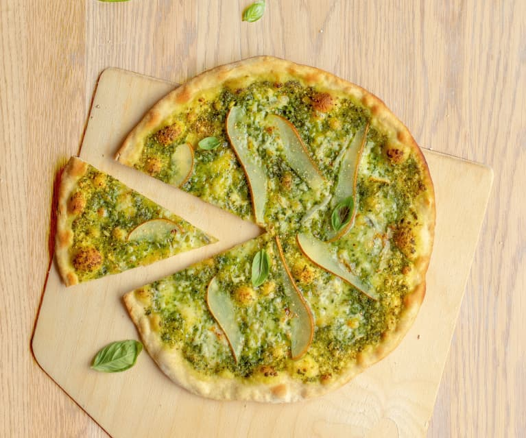

Pesto Pizza

A great alternative to your regular pizza.
Spread pesto on pizza crust. Top with tomatoes, bell peppers, olives, red onions, artichoke hearts and feta cheese.Bake for 8 to 10 minutes, or until cheese is melted and browned.
- 1 (12 inch) pre-baked pizza crust
- 1 ripe tomato, chopped
- 1 (2 ounce) can chopped black olives, drained
Back